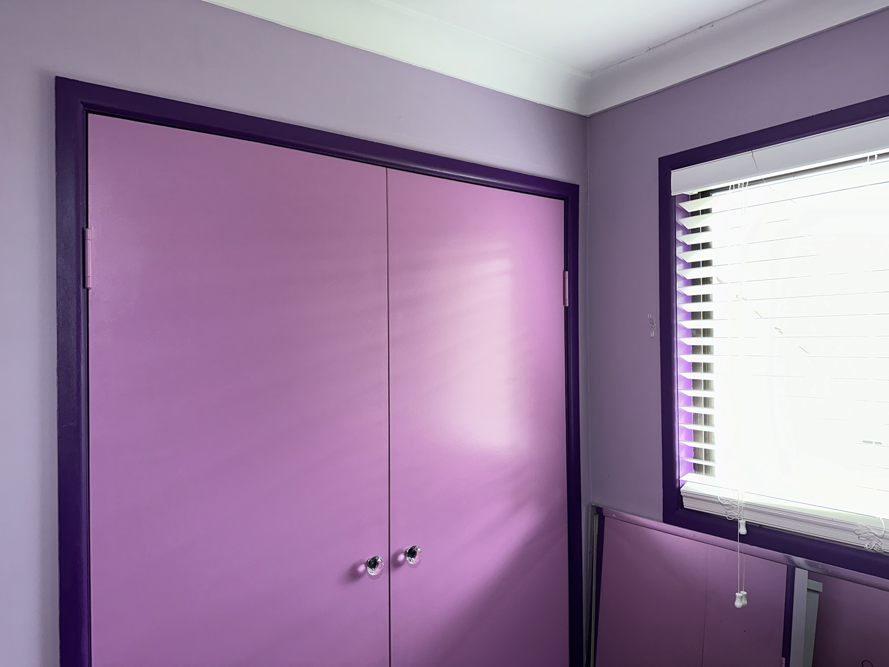

Let there be purple!

My sister just happens to own a house that was painted lavender, which happens to be one of my favourite colours. Anyway, she had a spare room that was in serious need of refreshing and she told me I could paint it whatever colours I wanted! So I picked three shades of purple, and one of pink! 🤣

After choosing the colours, I spent a couple of days preparing the room by wiping down all the walls, patching up scratches and holes, sanding any rough spots, and taping out the sections. I also removed the wardrobe doors for ease of access. I managed to do one by myself using stuff to prop up the door but decided I needed an extra pair of hands to help remove the other, so as not to accidentally break the wood where the door hinges were attached as the doors were quite heavy.

I used 'Wisteria Petal', as my feature wall colour, as well for inside my cupboard. 'Perfectly Purple' was used for the trims on all the door frames and window frames, 'Miss Universe' for the ceiling and cornices, and 'Sachet Pink' for the doors to add that little bit of colour pop to break up the purples!

I then got the white faux wood blinds installed with my roommate/"sister in law" doing the actual drilling, 'cause she's into woodwork and I don't trust myself with a drill, as I've never used one yet, haha! My fav bit is probably the cute little crystal door handles for my wardrobe my sister picked out for me after I mentioned I wanted crystal handles. 🤩
